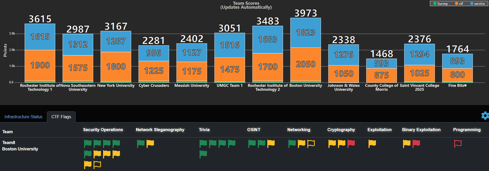
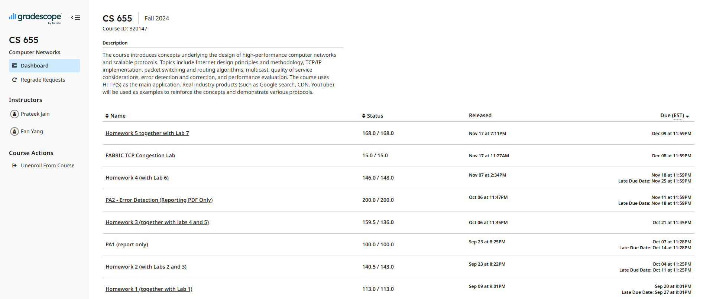
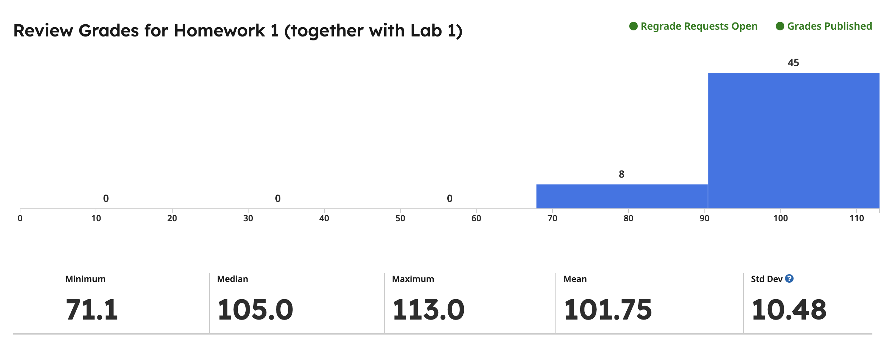
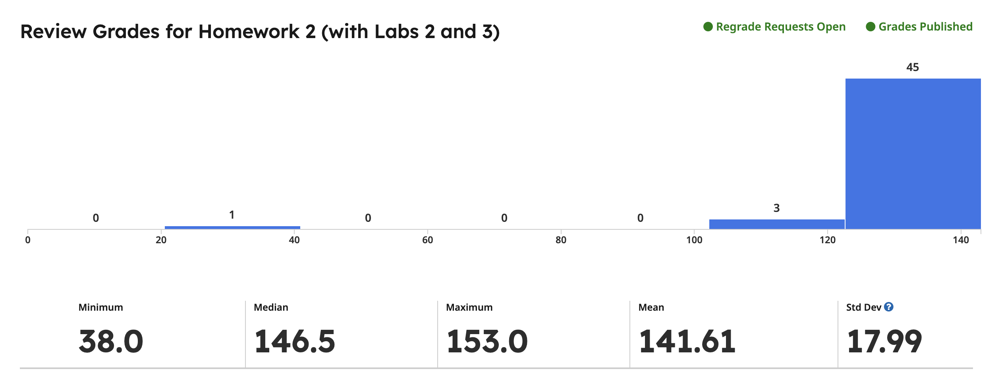
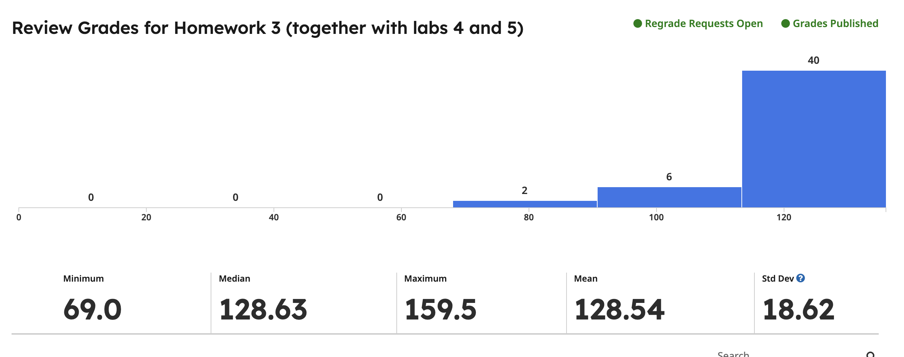
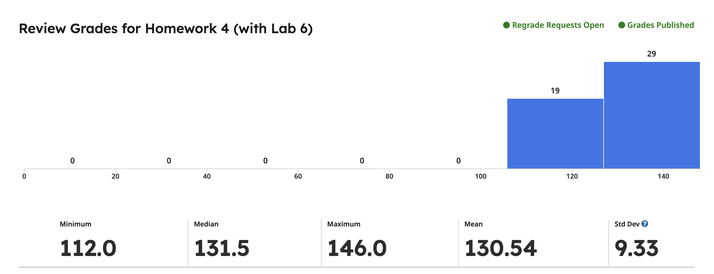
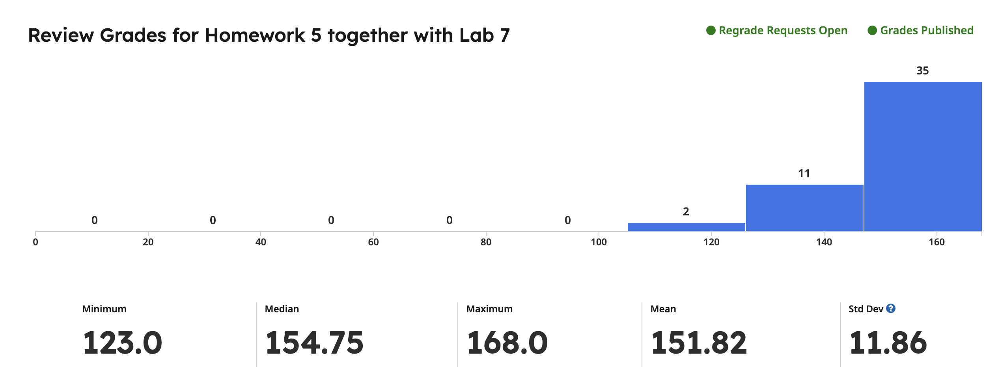
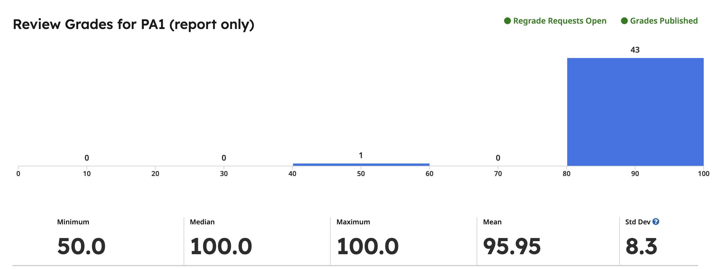
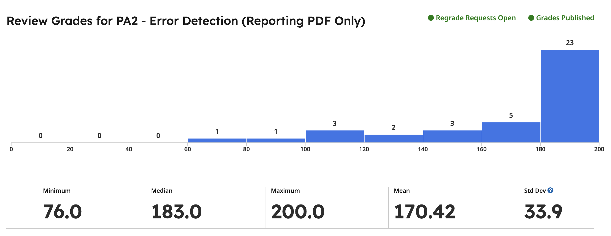
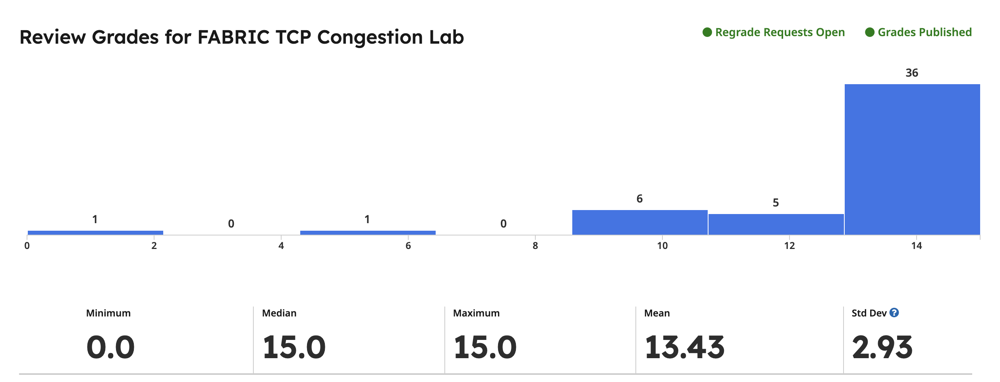

My Cybersecurity Journey
Binyu Wang
About Me
Originally embarking on an academic path focused on business studies, my undergraduate journey underwent a transformative shift towards computer science, sparked by my growing fascination with cybersecurity and network protocols during my exchange program in the UK. This transition culminated in an undergraduate research project, "Key Exchange using Neural Networks," fueling my passion to pursue cybersecurity further.
Currently, I am a Master's student in Computer Science specializing in Cybersecurity at the Graduate School of Arts & Sciences, Boston University. My coursework heavily emphasizes cybersecurity topics, preparing me with strong practical and theoretical foundations. I am proficient in multiple programming languages (Java, Python, C, PHP, JavaScript, SQL, Go, Swift, Solidity), security tools (Nmap, Kali Linux, Wireshark, tcpdump), platforms (Linux, Windows), and software collaboration tools (Git, GitHub). I am experienced in Linux systems administration and adept at command-line operations. Additionally, I possess skills in prompt engineering, effectively collaborating with AI-driven platforms. I am bilingual, fluent in Mandarin Chinese and English.
At Boston University, I am actively engaging in various cybersecurity competitions and extracurricular activities to rapidly expand my skillset, benefiting from my adaptability and swift learning capabilities. Currently, I am seeking internship opportunities specifically targeting roles such as Security Analyst, Information Security Analyst, or Security Operations Center (SOC) Analyst to apply my knowledge in real-world scenarios. Long-term, I aspire to develop my career as a Penetration Tester or a Software Engineer focusing on automation and development of cybersecurity defense solutions, proactively combating evolving cyber threats.
NCAE Cyber Games Experience
In March 2025, I represented Boston University as a team member in the NCAE Cyber Games, where our team clinched the East Overflow Regional Championship with a total score of 3973 points. While our Blue Team secured 1823 points for system maintenance, I independently tackled all Capture The Flag (CTF) challenges spanning Network Steganography, Cryptography, Exploitation, and Binary Exploitation. In just one month of intensive preparation, I solved 50% of the medium and hard-level CTF problems, earning 925 points out of our team’s 2050 CTF points.
This experience not only showcased my rapid learning and problem-solving skills but also deepened my practical expertise with security tools such as Kali Linux. Working closely with my teammates under high-pressure competition conditions enriched my communication and collaboration skills—qualities essential for entry-level cybersecurity roles such as Security Analyst, Information Security Analyst, or SOC Analyst.

Network Programming Assignments
In the Fall semester of 2024 at Boston University, I enrolled in a rigorous computer networking course that featured two challenging programming assignments. Through these projects, I gained a deep understanding of network protocols and practical experience in designing and implementing both transport and reliable data transfer protocols.
In the first assignment, I developed a client-server application to simulate TCP data transfer, capturing key performance metrics such as round-trip time, throughput, and congestion window size. I implemented and compared various congestion control mechanisms like Tahoe and Reno, and simulated network impairments—including packet loss, delay, and jitter—using Python’s matplotlib.
The second assignment required me to design data transfer protocols based on Selective-Repeat and Go-Back-N strategies under challenging network conditions, dynamically adjusting window sizes and packet loss rates to ensure robust packet delivery. My exceptional performance—achieving the highest scores in all assignments—demonstrated my technical expertise as well as my ability to quickly learn and apply complex concepts.









Enterprise Cybersecurity Management
In the Fall of 2024 at Boston University, I completed a graduate-level course in Cybersecurity Management that deeply explored industry standards and best practices including HIPAA, NIST frameworks, ISO/IEC 27001, and OWASP guidelines. Through a series of rigorous case studies, practical assignments, and collaborative projects, I gained hands-on experience in designing effective governance frameworks, managing cybersecurity compliance, and implementing robust security controls.
This comprehensive course enhanced my technical writing and documentation skills while providing practical insights into regulatory compliance and real-world security challenges. I learned to interpret and apply HIPAA requirements, implement NIST and ISO/IEC 27001 controls, and leverage OWASP methodologies to identify and mitigate web vulnerabilities.
Overall, this experience has fortified my understanding of cybersecurity principles and equipped me with the practical skills and strategic mindset needed to contribute to initiatives that safeguard organizational assets and promote continuous improvement in security practices.
Hands-On Cybersecurity Course
Between February and June 2024 at Boston University, I completed a comprehensive graduate‑level cybersecurity course that seamlessly combined rigorous theory with practical lab exercises. The course challenged me to explore critical areas such as network forensics, exploitation techniques, SQL injection, and reverse engineering.
Through two demanding programming assignments, I mastered essential security tools like nmap, Wireshark, tcpdump, and gdb. I developed practical skills by designing exploits, reverse shells, and payloads to simulate offensive security scenarios, while also addressing challenges in packet analysis and vulnerability exploitation.
Additionally, collaborating on a group project to build a custom network scanner for detecting vulnerabilities such as Log4Shell further enhanced my understanding of multithreading, rate‑limiting, and integration of third‑party services. This immersive experience not only sharpened my technical proficiency but also reinforced my problem‑solving and teamwork abilities in real‑world cybersecurity contexts.
GitHub Repository:
Log4j-Scanner
Web3 RPG: Blockchain & NFT Integration
In the Spring of 2024, I collaborated with my team at Boston University on an innovative project titled Poket Mine, a 2D role-playing game that integrated blockchain technology to enable true digital ownership of in-game assets through NFTs. The project challenged us to merge engaging gameplay with secure decentralized features, leveraging Ethereum smart contracts—following the ERC721 standard—and utilizing Web3.js for seamless user interactions.
In this project, I played a pivotal role in smart contract programming and functionality design, ensuring that NFT minting, trading, and dynamic attribute adjustments were handled securely. This hands-on experience not only deepened my practical understanding of blockchain applications in gaming but also reinforced my ability to integrate decentralized economies into interactive digital experiences.
Overall, working on Poket Mine expanded my expertise in Web3 development and NFT technology, further fueling my passion for harnessing these emerging technologies to redefine digital ownership and interactive experiences.
GitHub Repository:
PoketMine
Neural Network Key Exchange
During my Honours Year at the University of Liverpool (Sept 2022 – Jun 2023), I spearheaded a project focused on secure key exchange using neural networks through the innovative Kanter-Kinzel-Kanter (K-K-K) protocol. Under the guidance of Professor Alexei Lisitsa, I designed a neural network with specialized weight update rules to synchronize key generation between communication parties, and developed a Python-based prototype to simulate the protocol’s operation. I evaluated the protocol’s robustness against genetic algorithm-based attacks and analyzed how different parameters affected synchronization speed and security. This project not only underscored the promising role of neural networks in enhancing communication security but also significantly honed my skills in neural network design and cryptographic protocol analysis.
Project Video: